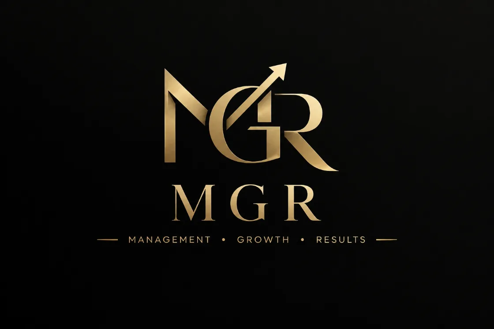

We help growing teams turn manual, fragmented processes into structured and automated workflows using ClickUp, automation, and AI.

MGR is a ClickUp VSP Certified Seller (Verified Service Provider) and our team includes both ClickUp Experts and ClickUp Admins.
Verified Service Provider recognized by ClickUp to sell and deliver implementation services.
Deep, hands-on knowledge of workspace design, automation and AI features.
Experience managing permissions, structure and governance across larger workspaces.
Growing teams often don't need more tools. They need better systems for the work they already do.
From process design to implementation and automation, We help turn operational requirements into practical systems.
Workspace architecture, Lists, Statuses, Custom Fields, Forms, Views and structure designed around your workflow.
Turn unclear or manual processes into structured workflows with clear ownership, stages and responsibilities.
Automate repetitive tasks, assignments, notifications, follow-ups, approvals and workflow actions.
Build AI-powered workflows that help teams retrieve information, reduce repetitive work and act faster.
Structure sales workflows, handoffs, requests, follow-ups and coordination between Sales and Operations.
Create dashboards that provide better visibility into workload, performance, SLAs and operational bottlenecks.
Practical training based on the team's actual workspace, processes and day-to-day responsibilities.
Improve existing systems, troubleshoot workflows and continuously optimize operations as the business grows.
A payment request process required significant manual review, information lookup and field completion.
The workflow was redesigned using structured data, ClickUp automation and an AI-powered Super Agent that could retrieve relevant information using a code.
Down from a process that could take 30+ minutes when detailed review and field completion were required.
We don't start by asking which ClickUp features to use. We start by understanding how the business actually works.
Understand the current process, people, inputs and outputs.
Identify bottlenecks and design a clearer workflow.
Configure the workspace around the agreed process.
Remove repetitive manual work using automation and AI.
Improve the system based on real usage and feedback.
ClickUp is the platform. The outcome is a better operational system.
Our background is in Sales Operations, Operations, Leadership, Account Management, and Business Development with several years of hands-on experience building and improving workflows in ClickUp.
Our focus is on understanding the operational problem first, then using ClickUp, automation and AI to build a system that makes the work clearer, faster and easier to manage.
Whether you already use ClickUp or are starting from scratch, the goal is the same: build a system that supports the way your team actually works.
Tell me how your team currently works, where things get stuck, and what still requires too much manual effort. We can explore whether there's a better way to build it.